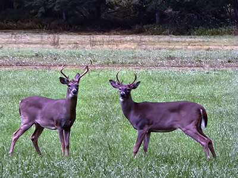
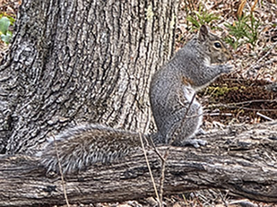

Watching Bucks
I really enjoyed watching these two bucks. They stared at me forever before leaving. Nothing takes the place of being in nature for me. It is so peaceful.
Field notes, photo stories, and thoughts about nature as it really looked in the moment.
These posts share the story behind the image, the conditions, and what I learned being there.

I really enjoyed watching these two bucks. They stared at me forever before leaving. Nothing takes the place of being in nature for me. It is so peaceful.

Wildlife photography takes patience. Sometimes the best part is simply waiting and noticing what happens. I was rewarded by watching this squirrel.